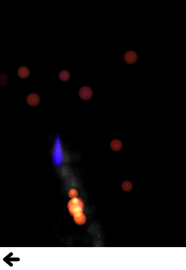

QtQuick.Particles Examples - Affectors
This is a collection of examples using Affectors in the QML particle system.

This is a collection of small QML examples relating to using Affectors in the particle system. Each example is a small QML file emphasizing a particular element or feature.
Age demonstrates using an Age affector to prematurely end the lives of particles.
As you move the affector around the screen, the particles inside it (which haven't already been affected) jump to a period near the end of their life. This gives them a short period to finish fading out, but changing lifeLeft to 0 (the default), would cause them to reach the end of their life instantly.
Attractor demonstrates using an Attractor affector to simulate a black hole
All particles in the scene, including the rocket ship's exhaust and pellets, are pulled towards the black hole. This effect is stronger closer to the black hole, so the asteroids near the top of the screen are barely affected at all, while the ones towards the middle sometimes curve drastically. To complete the effect, an Age affector covers the black hole to destroy particles which come in contact with it.
Custom Affector manipulates the properties of the particles directly in javascript. One Affector is used to make the leaves rock back and forth as they fall, looking more leaf-like than just spinning in circles:
Another is used to provide a slightly varying friction to the leaves as they 'land', to look more natural:
Friction is similar to the falling leaves in the custom affector, except that it uses a flat friction the whole way down instead of custom affectors.
Gravity is a convenience affector for applying a constant acceleration to particles inside it
GroupGoal sets up two particle groups for flaming and non-flaming balls, and gives you various ways to transition between them.
The non-flaming balls have a one in a hundred chance of lighting on their own each second, but they also have a GroupGoal set on the whole group. This affector affects all particles of the unlit group, when colliding with particles in the lit group, and cause them to move to the lighting group.
lighting is an intermediate group so that the glow builds up and the transition is less jarring. So it automatically moves into the lit group after 100ms.
The lit group also has TrailEmitters on it for additional fire and smoke, but does not transition anywhere. There are two more GroupGoal elements that allow particles in the unlit group to transition to the lighting group (and then to the lit group).
The first is just an area bound to the location of an image of a pilot flame. When unlit balls pass through the flame, they go straight to lit because the pilot flame is so hot.
The second is bound to the location of the last pointer interaction, so that touching or clicking on unlit balls (which is hard due to their constant movement) causes them to move to the lighting group.
Move shows some simple effects you can get by altering trajectory midway. The red particles have an affector that affects their position, jumping them forwards by 120px.
The green particles have an affector that affects their velocity, but with some angle variation. By adding some random direction velocity to their existing forwards velocity, they begin to spray off in a cone.
The blue particles have an affector that affects their acceleration, and because it sets relative to false this resets the acceleration instead of adding to it. Once the blue particles reach the affector, their horizontal velocity stops increasing as their vertical velocity decreases.
SpriteGoal has an affector which interacts with the sprite engine of particles, if they are being drawn as sprites by ImageParticle.
The SpriteGoal follows the image of the rocket ship on screen, and when it interacts with particles drawn by ImageParticle as sprites, it instructs them to move immediately to the "explode" state, which in this case is the animation of the asteroid breaking into many pieces.
Turbulence has a flame with smoke, and both sets of particles being affected by a Turbulence affector. This gives a faint wind effect.
To make the wind change direction, subsitute a black and white noise image in the noiseSource parameter (it currently uses a default noise source).
Wander uses a Wander affector to add some horizontal drift to snowflakes as they fall down.
There are different movements given by applying the Wander to different attributes of the trajectory, so the example makes it easy to play around and see the difference.
Files:
- particles/affectors/affectors.qml
- particles/affectors/content/GreyButton.qml
- particles/affectors/content/age.qml
- particles/affectors/content/attractor.qml
- particles/affectors/content/customaffector.qml
- particles/affectors/content/friction.qml
- particles/affectors/content/gravity.qml
- particles/affectors/content/groupgoal.qml
- particles/affectors/content/move.qml
- particles/affectors/content/spritegoal.qml
- particles/affectors/content/turbulence.qml
- particles/affectors/content/wander.qml
- particles/affectors/main.cpp
- particles/affectors/affectors.pro
- particles/affectors/affectors.qmlproject
- particles/affectors/affectors.qrc